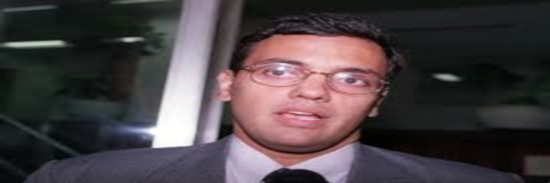
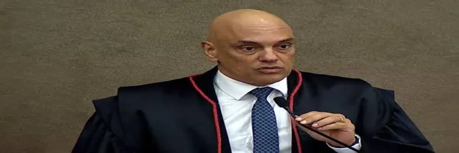

Quem é o ministro Alexandre de Moraes
Alexandre de Moraes, nascido em 13 de dezembro de 1968, é natural de São Paulo. Advogado, jurista, magistrado e professor com formação acadêmica na Universidade de São Paulo (USP), onde se graduou em 1990 e obteve os títulos de doutor em Direito do Estado (2000) e livre-docente em Direito Constitucional (2001). Bacharelou-se pela Faculdade de Direito do Largo de São Francisco da USP. Em 1998, tornou-se professor da Escola Superior do Ministério Público de São Paulo. Obteve o título de Doutor com a tese “Jurisdição constitucional e tribunais constitucionais — garantia suprema da Constituição”, sob orientação do jurista Dalmo de Abreu Dallari. Em 2000, passou a lecionar também na Escola Paulista da Magistratura e, no ano seguinte, conquistou a Livre-Docência com a tese “Teoria geral do direito constitucional administrativo — perfil constitucional da administração pública”. Atuou em diversos cursos preparatórios e, em 2002, por concurso, tornou-se professor associado da Faculdade de Direito da USP, além de professor titular da Universidade Presbiteriana Mackenzie. Ao longo de sua trajetória docente, ministrou aulas na Escola Superior do Ministério Público de São Paulo, na Escola Paulista da Magistratura e foi professor convidado em diversas instituições do Judiciário e do Ministério Público.

Ministro do STF
Ingresso como ministro no STF e TSE
No dia 6 de fevereiro de 2017, foi indicado por Michel Temer ao Supremo Tribunal Federal (STF), na vaga aberta pela morte do ministro Teori Zavascki em acidente aéreo no mês anterior. Sua nomeação foi recebida com resistência por setores da esquerda, especialmente pelo Partido dos Trabalhadores (PT), que questionaram sua imparcialidade devido à atuação política anterior e à proximidade com o PSDB e o governo Temer. Em 2020, Alexandre de Moraes foi empossado como ministro efetivo do Tribunal Superior Eleitoral (TSE), e em agosto de 2022 assumiu a presidência da Corte. Ele deixou a posição em 2024. Nesse contexto, ele acabou se tornando um dos principais nomes no embate contra a desinformação nas redes sociais. O objetivo era combater a proliferação de fake news que, segundo o tribunal, ameaçavam a lisura do pleito e a integridade das instituições. Saiba mais: PL das Fake News: os 10 pontos principais para entender o projeto de lei Desde março de 2019, é relator do Inquérito das Fake News no Supremo Tribunal Federal, instaurado pelo então presidente da Corte, ministro Dias Toffoli. O inquérito foi aberto com base no aumento de ataques virtuais e ameaças contra o STF e seus ministros. As investigações, conduzidas sob sigilo, avançaram sobre redes de desinformação, empresários, políticos e influenciadores, principalmente ligados à extrema direita. Derivaram em novos procedimentos, como o inquérito das milícias digitais e investigações sobre os atos de 8 de janeiro de 2023. Moraes foi responsável por decisões que incluíram Jair Bolsonaro como investigado por ataques ao sistema eleitoral, além de determinar a prisão de parlamentares como Daniel Silveira e ações contra canais bolsonaristas no Telegram e no X.
